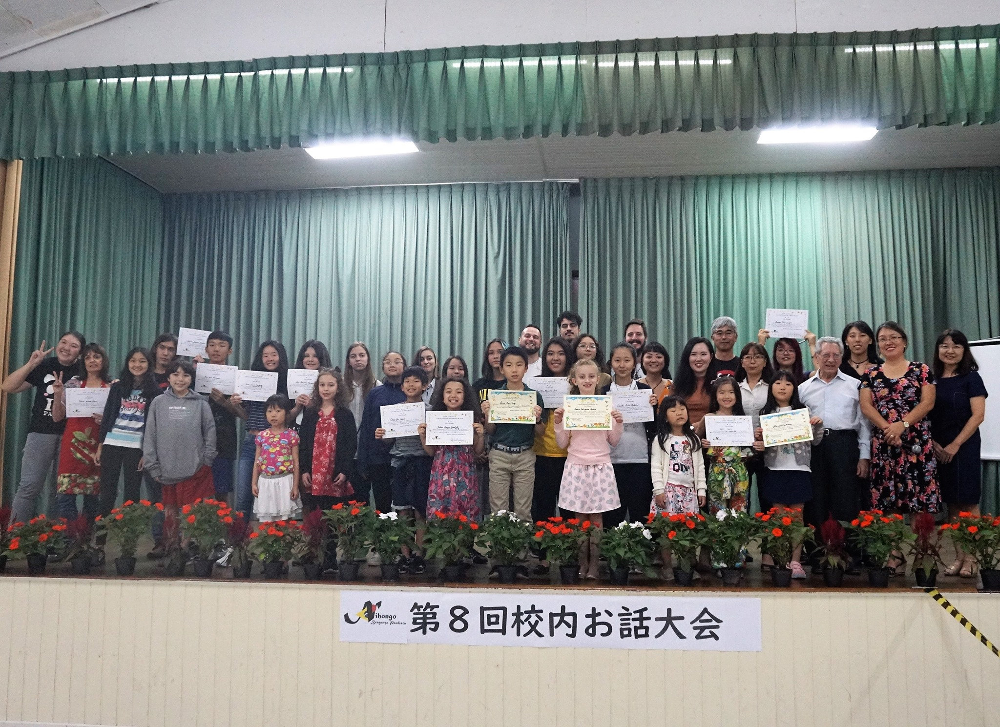

A Escola de Lingua Japonesa de Bragança Paulista (ブラガンサ日本語学校) conta com aulas para crianças a partir de 5 anos até a 3ª idade. Está localizada na Av. Nipo-Brasileira do bairro Jardim América de Bragança Paulista.
O que a escola oferece?Aulas de japonês de forma divertida e com diversas curiosidades além do idioma.
A escola conta com professores nativos e, além disso, traz para as aulas uma experiência extra, focando não apenas na gramática, como na pronuncia e escuta do aluno.
